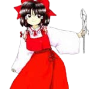

Reimu é frequentemente vista como:
Séria e direta – ela fala de forma simples e objetiva, sem rodeios.🧠 Inteligência e percepção
Apesar de parecer despreocupada, Reimu é extremamente perceptiva:
Detecta youkais e anomalias rapidamente
Possui forte intuição espiritual
Toma decisões rápidas em combate
Ela resolve incidentes com eficiência natural.
🧹 Comportamento cotidiano
Reimu tem um estilo de vida simples:
Gosta de descansar no santuário
Frequentemente reclama da falta de doações
Prefere evitar esforço desnecessário
Mesmo assim, cumpre seu papel quando necessário.
⛩ Natureza equilibrada
Reimu mantém o equilíbrio entre humanos e youkais:
Não odeia youkais, mas os exorciza quando causam problemas
Valoriza a ordem em Gensokyo
Age como guardiã da fronteira espiritual
Sua postura mistura responsabilidade, neutralidade e pragmatismo.
🤝 Relação com os outros
Ela interage com todos de forma direta:
É rival amigável de Marisa Kirisame
Tem ligação próxima com Yukari Yakumo
Lida frequentemente com youkais e espíritos
Apesar de sua franqueza, é uma figura respeitada em Gensokyo.
Sacerdotisa do Santuário Hakurei
Reimu é a sacerdotisa responsável pelo Santuário Hakurei, que mantém a barreira que separa Gensokyo do mundo exterior. Ela realiza rituais, resolve incidentes e protege o equilíbrio espiritual.
Resolvedora de incidentes
Sempre que algo estranho acontece em Gensokyo, Reimu é a principal responsável por investigar e resolver o problema.
Poder espiritual
Reimu possui poder espiritual extremamente alto:
Purificação de youkais
Criação de barreiras espirituais
Ataques com ofuda e agulhas
Resistência a magia e energia espiritual
Seu poder é especialmente eficaz contra entidades sobrenaturais.
Intuição sobrenatural
Reimu possui um "sexto sentido" que a guia naturalmente para resolver problemas e evitar perigos.
Voo e combate ágil
Ela voa livremente pelo céu e utiliza movimentos ágeis combinados com ataques espirituais, sendo uma combatente extremamente eficiente.
Ela age como a principal defensora do equilíbrio em Gensokyo.

Espécie: Humana
Título: Hakurei Shrine Maiden